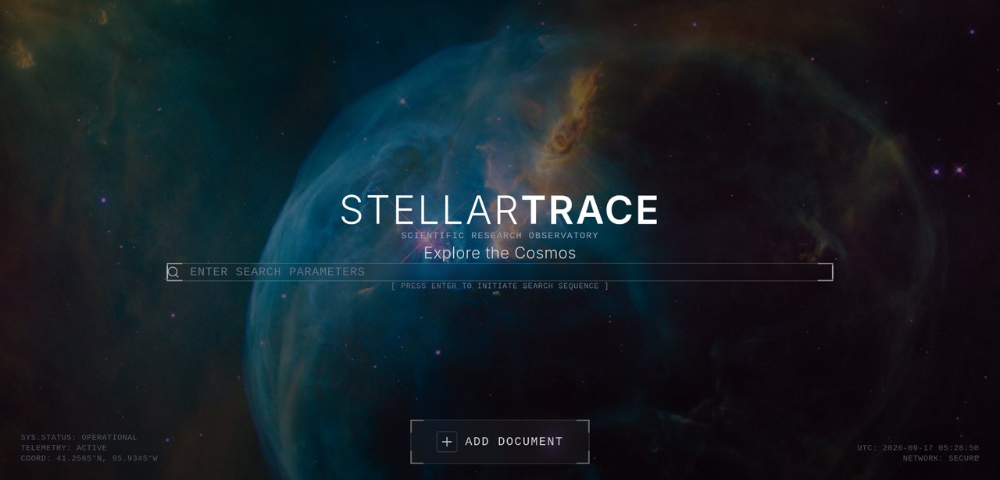
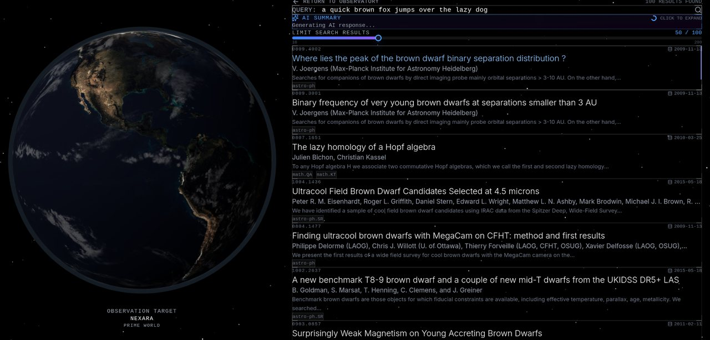
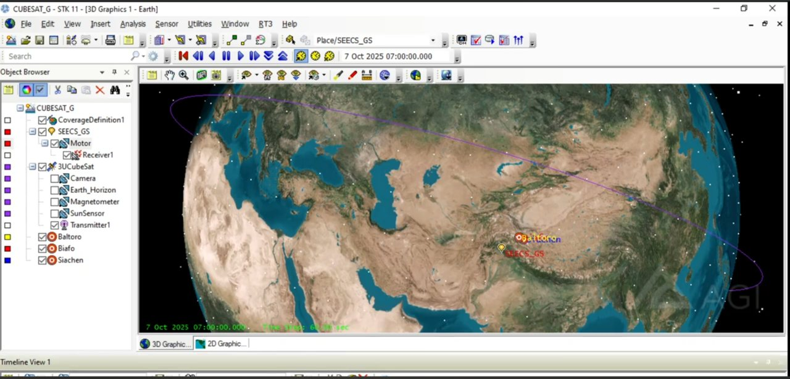
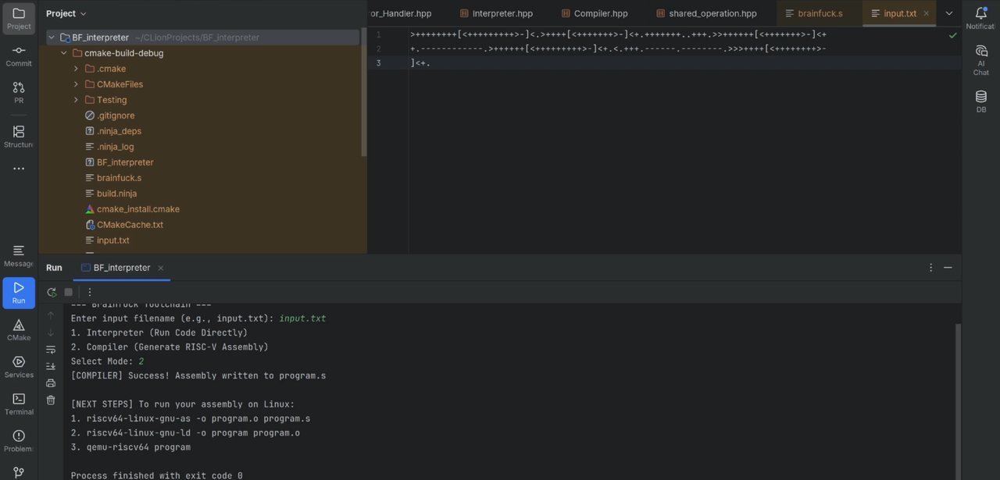
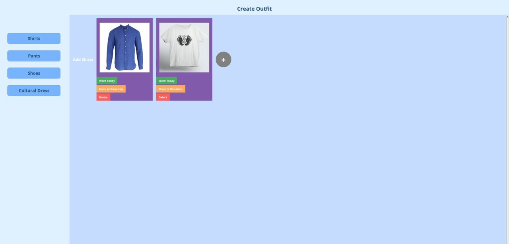
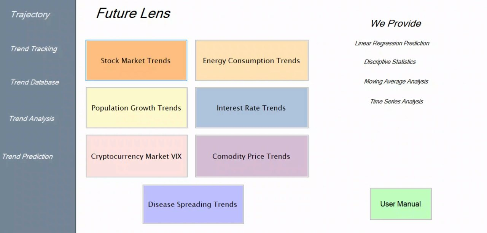

Image Gallery
Screenshots from the projects I have built, arranged three to a row.
Project Screenshots

Systems Engineering
StellarTrace Search Interface
Landing view of my ArXiv research paper search engine. Each planet is a Three.js body, and selecting one filters the corpus before the C++ backend ranks the results.

Systems Engineering
StellarTrace Ranked Results
Results returned by the C++ engine, which implements inverted indexing and Google style ranking over ArXiv metadata.

Full Stack
RideFlow Admin Dashboard
Role based administrator view of the ride management platform, with live fleet counters and a recent rides table backed by PostgreSQL and Flyway migrations.

Space Systems
CubeSat Remote Sensing Simulation
An AGI STK simulation over the Baltoro, Biafo and Siachen glaciers, showing the orbital track and the sensor footprint used for coverage analysis.

Compiler Design
Brainf*ck Interpreter and RISC-V Compiler
The interpreter running a program alongside the generated RISC-V assembly, produced by the code generator I wrote in C++.

Desktop Application
AI Wardrobe Manager
A Java Swing desktop client that catalogues clothing items and proposes outfit combinations from stored preferences.

Prediction System
FutureLens Prediction System
Forecast dashboard covering stock markets, cryptocurrency, energy consumption and population growth, each projected with statistical models over historical series.